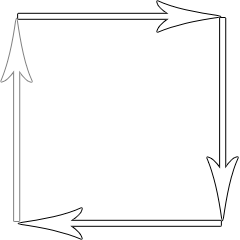
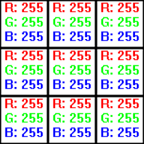
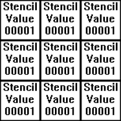

The Stencil Buffer
Last Updated 10/05/14
Up until now, we've always been rendering to the color buffer. You can also put values in the stencil buffer. We can then use those values to define the regions we want to draw or mask.
Say we have this quad:
And let's say when the polygon rasterizes, it turns into this 3x3 set of pixels.
Pixels are nothing but GLuint RGB values that go into the color buffer. The color buffer isn't the only buffer we can rasterize into. We can also put integer values in the stencil buffer:
We can then use stencil operations to say whether we do or not want to render where certain stencil values are at.

And let's say when the polygon rasterizes, it turns into this 3x3 set of pixels.

Pixels are nothing but GLuint RGB values that go into the color buffer. The color buffer isn't the only buffer we can rasterize into. We can also put integer values in the stencil buffer:

We can then use stencil operations to say whether we do or not want to render where certain stencil values are at.
From LUtil.cpp
//OpenGL texture
LTexture gTexture;
//Polygon attributes
GLfloat gPolygonAngle = 0.f;
GLfloat gPolygonX = SCREEN_WIDTH / 2.f, gPolygonY = SCREEN_HEIGHT / 2.f;
//Stencil operation
GLuint gStencilRenderOp = GL_NOTEQUAL;
At the top of LUtil.cpp, we declare the texture we're going to render. In this tutorial, we're also going to have a spinning triangle render to the stencil buffer.
"gPolygonAngle", "gPolygonX", and "gPolygonY" are used to define the triangle.
Lastly, we have "gStencilRenderOp" which defines the stencil operation we're going to use when rendering the texture to the color buffer. In this tutorial, we're going to either not render where the triangle is at, only render where the triangle is at, or ignore the triangle entirely and render everything.
Lastly, we have "gStencilRenderOp" which defines the stencil operation we're going to use when rendering the texture to the color buffer. In this tutorial, we're going to either not render where the triangle is at, only render where the triangle is at, or ignore the triangle entirely and render everything.
From LUtil.cpp
bool initGL()
{
//Initialize GLEW
GLenum glewError = glewInit();
if( glewError != GLEW_OK )
{
printf( "Error initializing GLEW! %s\n", glewGetErrorString( glewError ) );
return false;
}
//Make sure OpenGL 2.1 is supported
if( !GLEW_VERSION_2_1 )
{
printf( "OpenGL 2.1 not supported!\n" );
return false;
}
//Set the viewport
glViewport( 0.f, 0.f, SCREEN_WIDTH, SCREEN_HEIGHT );
//Initialize Projection Matrix
glMatrixMode( GL_PROJECTION );
glLoadIdentity();
glOrtho( 0.0, SCREEN_WIDTH, SCREEN_HEIGHT, 0.0, 1.0, -1.0 );
//Initialize Modelview Matrix
glMatrixMode( GL_MODELVIEW );
glLoadIdentity();
//Initialize clear color
glClearColor( 0.f, 0.f, 0.f, 1.f );
//Enable texturing
glEnable( GL_TEXTURE_2D );
//Set blending
glEnable( GL_BLEND );
glDisable( GL_DEPTH_TEST );
glBlendFunc( GL_SRC_ALPHA, GL_ONE_MINUS_SRC_ALPHA );
//Initialize stencil clear value
glClearStencil( 0 );
//Check for error
GLenum error = glGetError();
if( error != GL_NO_ERROR )
{
printf( "Error initializing OpenGL! %s\n", gluErrorString( error ) );
return false;
}
//Initialize DevIL and DevILU
ilInit();
iluInit();
ilClearColour( 255, 255, 255, 000 );
//Check for error
ILenum ilError = ilGetError();
if( ilError != IL_NO_ERROR )
{
printf( "Error initializing DevIL! %s\n", iluErrorString( ilError ) );
return false;
}
return true;
}
The function initGL() now has a call to glClearStencil() which ironically doesn't clear the stencil. This function works like glClearColor(), in that it defines what value the
stencil value gets stencil buffer cleared with when you call glClear().
From LUtil.cpp
bool loadMedia()
{
//Load texture
if( !gTexture.loadTextureFromFile32( "26_the_stencil_buffer/opengl.png" ) )
{
printf( "Unable to load texture!\n" );
return false;
}
return true;
}
void update()
{
//Rotate triangle
gPolygonAngle += 6.f;
}
In loadMedia() we load our texture and in update() we update the triangle's rotation angle.
From LUtil.cpp
void render()
{
//Clear color and stencil buffer
glClear( GL_COLOR_BUFFER_BIT | GL_STENCIL_BUFFER_BIT );
glLoadIdentity();
At the top of render we clear both the color buffer and stencil buffer.
From LUtil.cpp
//Disable rendering to the color buffer
glColorMask( GL_FALSE, GL_FALSE, GL_FALSE, GL_FALSE );
//Start using the stencil
glEnable( GL_STENCIL_TEST );
Now we need to render the triangle to the stencil buffer. Using glColorMask(), we'll disable rendering to the R, G, B, and A values in the color buffer. This way the triangle
doesn't render to the color buffer and is invisible to the user. Then we enable stencil testing so we can start doing our stencil operations.
From LUtil.cpp
//Place a 1 where rendered
glStencilFunc( GL_ALWAYS, 1, 1 );
//Replace where rendered
glStencilOp( GL_REPLACE, GL_REPLACE, GL_REPLACE );
//Render stencil triangle
glTranslatef( gPolygonX, gPolygonY, 0.f );
glRotatef( gPolygonAngle, 0.f, 0.f, 1.f );
glBegin( GL_TRIANGLES );
glVertex2f( -0.f / 4.f, -SCREEN_HEIGHT / 4.f );
glVertex2f( SCREEN_WIDTH / 4.f, SCREEN_HEIGHT / 4.f );
glVertex2f( -SCREEN_WIDTH / 4.f, SCREEN_HEIGHT / 4.f );
glEnd();
This call to glStencilFunc() will handle how we render to the stencil buffer. "GL_ALWAYS" makes sure that where ever our triangle renders, a "1" (the second argument) will be
rendered to the stencil buffer. The last argument is a mask that ANDs the second argument when we render. You'll want to use a different mask if you're using stencil values other
than one.
This call to glStencilOp() controls what happens with the stencil values we try to render. We want the values we render (which is the second argument in our call to glStencilFunc()) to the stencil buffer to replace what's in the stencil buffer so the first argument is "GL_REPLACE". The 2nd/3rd arguments have to do with the depth buffer, but since it's disabled it doesn't matter for this demo.
Finally, we render our triangle to the stencil buffer.
This call to glStencilOp() controls what happens with the stencil values we try to render. We want the values we render (which is the second argument in our call to glStencilFunc()) to the stencil buffer to replace what's in the stencil buffer so the first argument is "GL_REPLACE". The 2nd/3rd arguments have to do with the depth buffer, but since it's disabled it doesn't matter for this demo.
Finally, we render our triangle to the stencil buffer.
From LUtil.cpp
//Reenable color
glColorMask( GL_TRUE, GL_TRUE, GL_TRUE, GL_TRUE );
//Where a 1 was not rendered
glStencilFunc( gStencilRenderOp, 1, 1 );
//Keep the pixel
glStencilOp( GL_KEEP, GL_KEEP, GL_KEEP );
With our triangle rendered to the stencil buffer, we turn on rendering to the color buffer again with glColorMask().
This next call controls how the textured quad is going to be rendered using the stencil buffer. The default value we gave to "gStencilRenderOp" was "GL_NOTEQUAL", so only the places where the triangle did not get rendered will the texture render. If "gStencilRenderOp" gets changed to "GL_EQUAL", only in the areas where the triangle was rendered will the texture show up. If it's set to "GL_ALWAYS", it will disregard the stencil test and render the whole texture.
Lastly, we don't want to mess with the existing stencil values we have glStencilOp() keep them all.
This next call controls how the textured quad is going to be rendered using the stencil buffer. The default value we gave to "gStencilRenderOp" was "GL_NOTEQUAL", so only the places where the triangle did not get rendered will the texture render. If "gStencilRenderOp" gets changed to "GL_EQUAL", only in the areas where the triangle was rendered will the texture show up. If it's set to "GL_ALWAYS", it will disregard the stencil test and render the whole texture.
Lastly, we don't want to mess with the existing stencil values we have glStencilOp() keep them all.
From LUtil.cpp
//Render stenciled texture
glLoadIdentity();
gTexture.render( ( SCREEN_WIDTH - gTexture.imageWidth() ) / 2.f, ( SCREEN_HEIGHT - gTexture.imageHeight() ) / 2.f );
//Finished using stencil
glDisable( GL_STENCIL_TEST );
//Update screen
glutSwapBuffers();
}
Here we render the stenciled texture. Then we disable the stencil test since we're done using it.
From LUtil.cpp
void handleKeys( unsigned char key, int x, int y )
{
//If the user presses q
if( key == 'q' )
{
//Cycle through stencil operations
if( gStencilRenderOp == GL_NOTEQUAL )
{
//Render where stencil polygon was rendered
gStencilRenderOp = GL_EQUAL;
}
else if( gStencilRenderOp == GL_EQUAL )
{
//Render everything
gStencilRenderOp = GL_ALWAYS;
}
else if( gStencilRenderOp == GL_ALWAYS )
{
//Render where stencil polygon was not rendered
gStencilRenderOp = GL_NOTEQUAL;
}
}
}
When the user presses 'q', we cycle through the various ways to stencil the texture.
From LUtil.cpp
void handleMouseMotion( int x, int y )
{
//Set polygon position
gPolygonX = x;
gPolygonY = y;
}
When the user moves the mouse, we change the position of the triangle. Note: when you click the mouse the triangle won't move, it's only when you move the mouse when the mouse
button is down.
From main.cpp
#include "LUtil.h"
int main( int argc, char* args[] )
{
//Initialize FreeGLUT
glutInit( &argc, args );
//Create OpenGL 2.1 context
glutInitContextVersion( 2, 1 );
//Create Double Buffered Window
glutInitDisplayMode( GLUT_DOUBLE | GLUT_STENCIL );
glutInitWindowSize( SCREEN_WIDTH, SCREEN_HEIGHT );
glutCreateWindow( "OpenGL" );
//Do post window/context creation initialization
if( !initGL() )
{
printf( "Unable to initialize graphics library!\n" );
return 1;
}
//Load media
if( !loadMedia() )
{
printf( "Unable to load media!\n" );
return 2;
}
//Set key handler
glutKeyboardFunc( handleKeys );
//Set mouse handler
glutMotionFunc( handleMouseMotion );
//Set rendering function
glutDisplayFunc( render );
//Set main loop
glutTimerFunc( 1000 / SCREEN_FPS, runMainLoop, 0 );
//Start GLUT main loop
glutMainLoop();
return 0;
}
Lastly, in the main() function we have to set the mouse motion handler with glutMotionFunc() and pass in GLUT_STENCIL to glutInitDisplayMode().